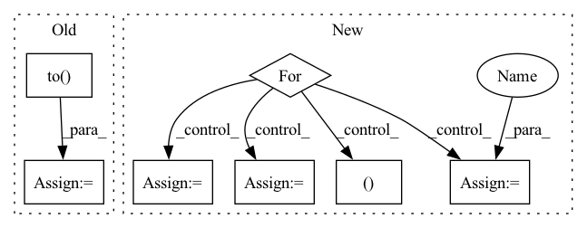

Pattern ID :10529

Before Change
train_dataset = torch.utils.data.TensorDataset(x_seq, target_seq)
train_loader = torch.utils.data.DataLoader(train_dataset, batch_size=batch_size, shuffle=shuffle)
criterion = torch.nn.MSELoss().to(device)
for batch_data in train_loader:
encoder_inputs, labels = batch_data
outputs = model(encoder_inputs, edge_index)
assert outputs.shape == (batch_size, node_count, num_for_predict)
After Change
train_dataset = torch.utils.data.TensorDataset(x_seq, target_seq)
train_loader = torch.utils.data.DataLoader(train_dataset, batch_size=batch_size, shuffle=shuffle)
for batch_data in train_loader:
encoder_inputs, _ = batch_data
outputs1 = model(encoder_inputs, edge_index_seq)
outputs2 = model(encoder_inputs, edge_index_seq[0])
assert outputs1.shape == (batch_size, node_count, num_for_predict)
assert outputs2.shape == (batch_size, node_count, num_for_predict)
In pattern: SUPERPATTERN
Frequency: 3
Non-data size: 7
Instances
Fragment ID: 36659422
Project Name: benedekrozemberczki/pytorch_geometric_temporal
Commit Name: 8efa512ff3ac06546a082de036a85428720abd7a
Time: 2021-03-20
Author: He_YX@outlook.com
File Name: test/convolutional_test.py
M Class Name: AnonimousClass
N Class Name: AnonimousClass
M Method Name: test_astgcn(0)
N Method Name: test_astgcn(0)
M Parent Class:
N Parent Class:
M File Name: test/convolutional_test.py
N File Name: test/convolutional_test.py
M Start Line: 248
M End Line: 285
N Start Line: 236
N End Line: 266
'>
Before Change
number_to_gen = len(eval_data)
idx2token = eval_data.idx2token
for _ in range(number_to_gen):
hidden_states = torch.zeros(self.num_layers, 1, self.hidden_size).to(self.device)
generate_tokens = []
input_seq = torch.LongTensor([[self.sos_token_idx]]).to(self.device)
for gen_idx in range(100):
decoder_input = self.token_embedder(input_seq)
After Change
def generate(self, eval_dataloader):
generate_corpus = []
idx2token = eval_data.idx2token
for batch_data in eval_dataloader:
source_text = batch_data["source_idx"]
source_length = batch_data["source_length"]
source_embeddings = self.source_token_embedder(source_text)
encoder_outputs, encoder_states = self.encoder(source_embeddings, source_length)
for bid in range(source_text.size(0)):
generate_tokens = []
input_seq = torch.LongTensor([[self.sos_token_idx]]).to(self.device)
for gen_idx in range(100):
decoder_input = self.target_token_embedder(input_seq)
if self.attention_type is not None:
decoder_outputs, decoder_states = self.decoder(decoder_input,
encoder_states[:, bid, :],
encoder_outputs[bid, :, :])
else:
decoder_outputs, decoder_states = self.decoder(decoder_input, encoder_states[:, bid, :])
token_logits = self.vocab_linear(decoder_outputs)
topv, topi = torch.log(F.softmax(token_logits, dim=-1) + 1e-12).data.topk(k=4)
topi = topi.squeeze()
'>
Fragment ID: 36655176
Project Name: rucaibox/textbox
Commit Name: caddee842482845d81bd7540f39894db2eece959
Time: 2020-11-17
Author: lijunyi@ruc.edu.cn
File Name: textbox/model/Seq2Seq/rnnencdec.py
M Class Name: RNNEncDec
N Class Name: RNNEncDec
M Method Name: generate(2)
N Method Name: generate(2)
M Parent Class: ConditionalGenerator
N Parent Class: ConditionalGenerator
M File Name: textbox/model/Seq2Seq/rnnencdec.py
N File Name: textbox/model/Seq2Seq/rnnencdec.py
M Start Line: 68
M End Line: 87
N Start Line: 69
N End Line: 97
'>
Before Change
train_dataset = torch.utils.data.TensorDataset(x_seq, target_seq)
train_loader = torch.utils.data.DataLoader(train_dataset, batch_size=batch_size, shuffle=shuffle)
criterion = torch.nn.MSELoss().to(device)
for batch_data in train_loader:
encoder_inputs, labels = batch_data
outputs = model(encoder_inputs, edge_index)
assert outputs.shape == (batch_size, node_count, num_for_predict)
After Change
train_dataset = torch.utils.data.TensorDataset(x_seq, target_seq)
train_loader = torch.utils.data.DataLoader(train_dataset, batch_size=batch_size, shuffle=shuffle)
for batch_data in train_loader:
encoder_inputs, _ = batch_data
outputs1 = model(encoder_inputs, edge_index_seq)
outputs2 = model(encoder_inputs, edge_index_seq[0])
assert outputs1.shape == (batch_size, node_count, num_for_predict)
assert outputs2.shape == (batch_size, node_count, num_for_predict)
'>
Fragment ID: 36655192
Project Name: benedekrozemberczki/pytorch_geometric_temporal
Commit Name: 8efa512ff3ac06546a082de036a85428720abd7a
Time: 2021-03-20
Author: He_YX@outlook.com
File Name: test/convolutional_test.py
M Class Name: AnonimousClass
N Class Name: AnonimousClass
M Method Name: test_mstgcn(0)
N Method Name: test_mstgcn(0)
M Parent Class:
N Parent Class:
M File Name: test/convolutional_test.py
N File Name: test/convolutional_test.py
M Start Line: 291
M End Line: 328
N Start Line: 293
N End Line: 311